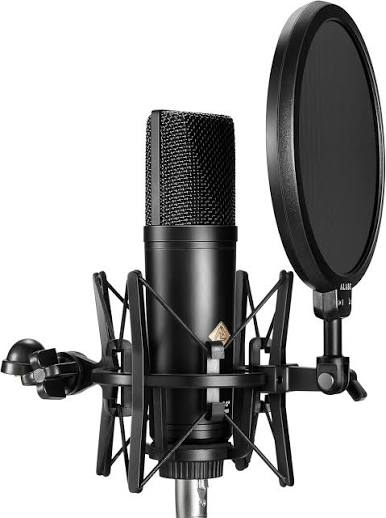
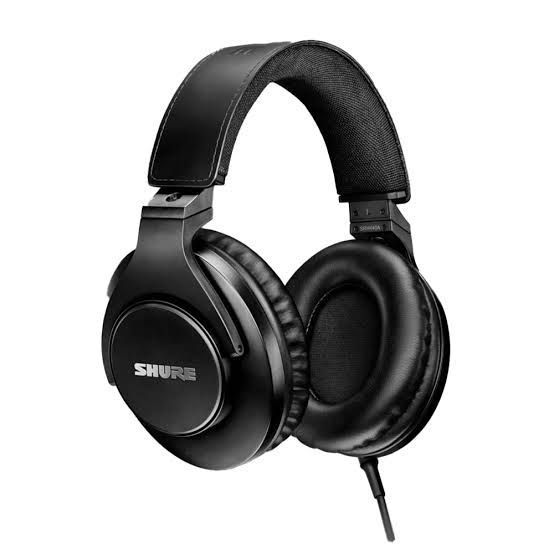
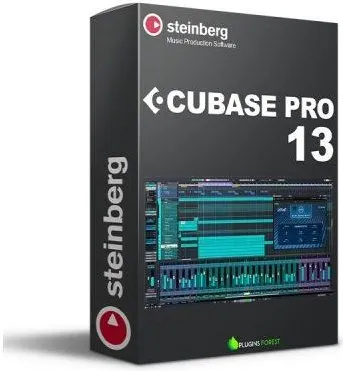
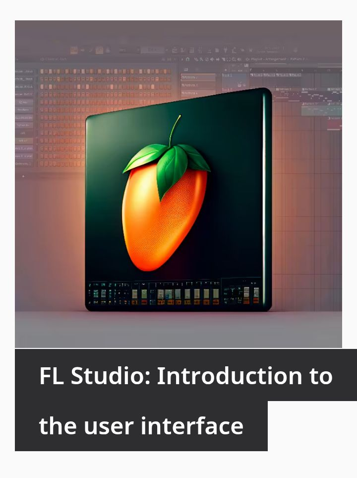
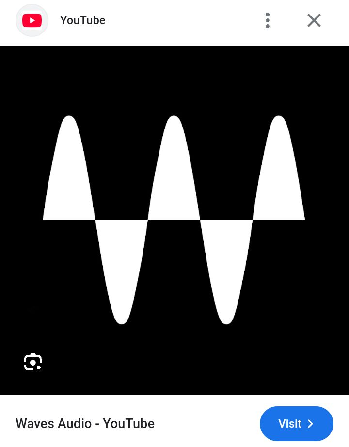

I know this sucks, especially if you are damn broke.
But the truth is, Recording with your phone or Earpiece aint gonna cut it.
get a job, or find a way get good equipments to capture clean vocals. Take your time do research there a various types. find the one that fits your budget and have good quality.
Equipments you are gonna need;
1. Laptop
2. Microphone
3. Soundcard
4. Studio headphones
5. Monitors (studio speakers)
after buying these, you can go to youtube to check the proper set ups and connections.
 Yup!, Go wild, Enjoy yourself as much as you want, listen to musics, get inspirations and never hesitate to put it out there. spend time, feel free to write songs and record in a quiet environment. you never know which song might hit your audience more, so keep going.
Always advertise yourself, Have more confidence in yourself, Put yourself out there, make good use of socail media, blogs, trends to post songs, covers, Grow a fan base and keep them up to date!.
Practice makes perfect, you wanna get beautiful in singing or rapping. Always practice regularly it helps with getting the hang of things and muscle memory.
mixing and mastering is a huge part of music.it deals with editing, cleaning,and making the song radio-ready for ears to listen. There is actually alot to mixing and mastering. from finding the right DAW to mastering. these are some guiding lights on mixing vocals
1.volume balancing
2. editing/cleaning
3. autotune
4. EQ
5. compression
6. Reverb
7. Delay
these are the basics we keeping it simple ;)
There are more to it but the main aim of this article is to give some light touches as you go deeper youll learn some advanced tips
DAW: Digital Audio Workstation
 these are softwares used to mix and master your music. we have several, FL studio, Cubase, Ableton live, Pro tools and many more...
you download them and plugins, plugins are used to to edit and add effects to the audio it is applied to. we have plugin brands e.g Fabfilter and Waves audio. those are the most popular plugins currently
